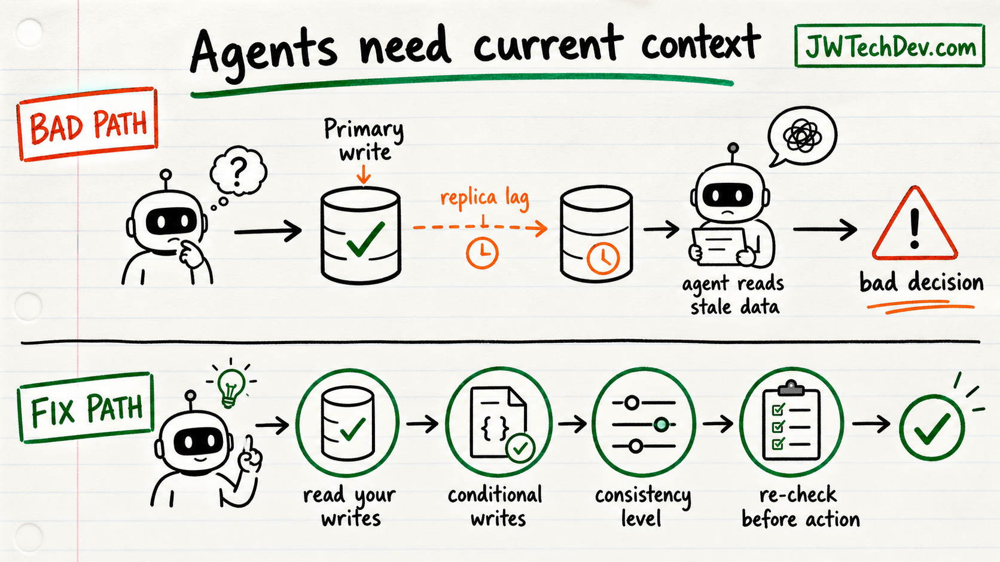

AI agents need consistent data, not just fast data
Fast stale data can still push an agent into a bad decision.

Quick answer
Agents do not just need more context. They need the right context at the right consistency level. If an agent reads stale data before taking action, the model may sound confident while reasoning from yesterday's truth.
Why this breaks agents
The AWS Architecture Blog frames consistency as a reliability issue for AI systems. That is the right framing. A context window can become the place where stale state turns into a bad action.
Replica lag, eventually consistent reads, cached records, and race conditions were already hard. Agents make the failure mode easier to miss because the final answer may look polished even when the input state was wrong.
Not all data needs the same model
Some agent tasks can tolerate eventual consistency. A learning assistant summarizing old documentation probably does not need a global strongly consistent transaction.
Other tasks need stronger guarantees. Anything involving identity, permissions, money, production changes, inventory, customer state, or irreversible action deserves a stricter data model and a re-check before action.
What builders should do
Write down the truth requirement before choosing the database pattern.
Use read-your-writes behavior where the agent must see its own prior action.
Use conditional writes for state transitions that should not be overwritten.
Re-check critical state immediately before the agent triggers an action.
Log which data source and timestamp informed the final decision.
Examples
For a support agent, stale profile data could cause it to offer the wrong entitlement.
For a deployment agent, stale environment state could make it act on a version that is no longer current.
For a purchasing agent, stale budget data could let it approve spend that should have been blocked.
Bottom line
Agent architecture is data architecture. Before asking whether the model is smart enough, ask whether the data it sees is current enough for the decision it is about to make.
Sources checked
Want the starter kit?
Grab the free JWTechDev.com starter kit if you want a practical way to connect cloud basics, AI workflows, and approval gates.
Get resources